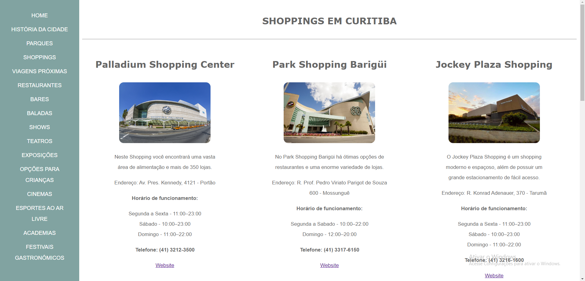
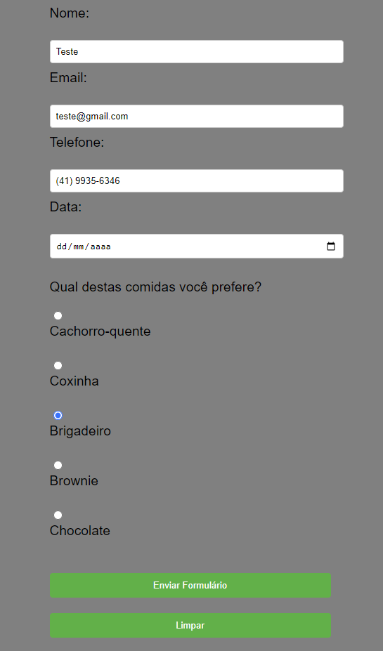
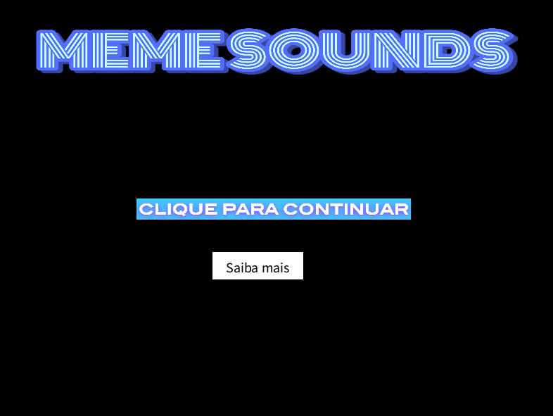
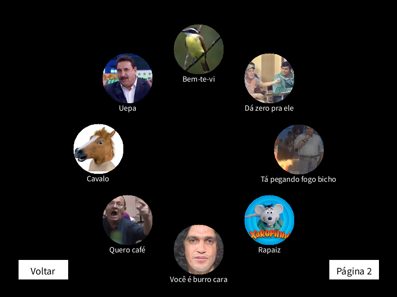

Campo magro

Neste projeto, criamos um website dedicado à cidade de Campo Magro - PR, com o objetivo de fornecer informações detalhadas sobre os principais destinos turísticos locais. Nosso objetivo foi promover o turismo na cidade, oferecendo aos visitantes uma visão abrangente e atraente dos pontos de interesse.
Shoppings de Curitiba


Realizamos uma atividade em que desenvolvemos uma página em HTML e CSS para exibir os principais shoppings da cidade. Ao final, todos os grupos uniram suas páginas para criar um site completo que abrange todas as informações dos shoppings em um só lugar.
formulario
Durante a atividade em sala, desenvolvemos um formulário simples que permite aos usuários preencherem seus dados pessoais e endereço de e-mail. Ao enviar o formulário, uma notificação por e-mail é enviada com as informações fornecidas.
app multimidia
 Criamos um aplicativo multimídia chamado "Meme Sounds" utilizando a plataforma Processing. Nele, disponibilizamos uma variedade de memes hilariantes, onde ao clicar em cada um, o som correspondente é reproduzido. O aplicativo possui duas páginas com diferentes memes e um menu para facilitar a navegação.
jogo construct
.jpeg)
.jpeg)
Desenvolvemos um jogo chamado "Puc Adventure" utilizando a plataforma Construct 3. Nele, o jogador assume o papel de um estudante que deve se apressar para chegar à sala de aula no horário e recolher os objetos essenciais ao longo do percurso.